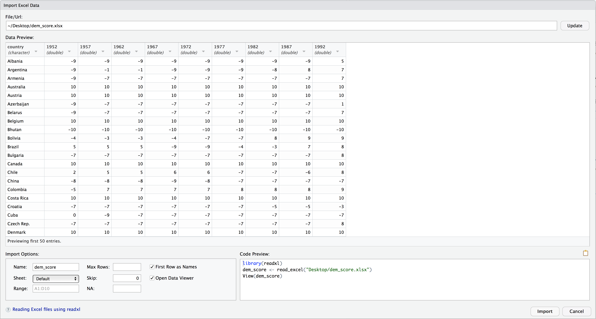

Importing spreadsheets into R
Up to this point, we've been using data stored inside of an R package. In the real world, your data will usually come from a spreadsheet file either on your computer or online. Spreadsheet data is often saved in one of two formats:
- A Comma Separated Values
.csvfile. You can think of a CSV file as a bare-bones spreadsheet where:- Each line in the file corresponds to one row of data/one observation.
- Values for each line are separated with commas. In other words, the values of different variables are separated by commas.
- The first line is often, but not always, a header row indicating the names of the columns/variables.
- An Excel
.xlsxfile. This format is based on Microsoft's proprietary Excel software. As opposed to a bare-bones.csvfiles,.xlsxExcel files contain a lot of metadata, i.e. data about the data. Examples include the use of bold and italic fonts, colored cells, different column widths, and formula macros etc.
Google Sheets allows you to download your data in both comma separated values .csv and Excel .xlsx formats: Go to the Google Sheets menu bar -> File -> Download as -> Select "Microsoft Excel" or "Comma-separated values".
We'll cover two methods for importing data in R: one using the R console and the other using RStudio's graphical interface.
Method 1: From the console
First, let's download a Comma Separated Values (CSV) file of ratings of the level of democracy in different countries spanning 1952 to 1992: https://moderndive.com/data/dem_score.csv. We use the read_csv() function from the readr package to read it off the web and then take a look.
library(readr)
dem_score <- read_csv("https://moderndive.com/data/dem_score.csv")
dem_score# A tibble: 96 x 10
country `1952` `1957` `1962` `1967` `1972` `1977` `1982` `1987` `1992`
<chr> <dbl> <dbl> <dbl> <dbl> <dbl> <dbl> <dbl> <dbl> <dbl>
1 Albania -9 -9 -9 -9 -9 -9 -9 -9 5
2 Argentina -9 -1 -1 -9 -9 -9 -8 8 7
3 Armenia -9 -7 -7 -7 -7 -7 -7 -7 7
4 Australia 10 10 10 10 10 10 10 10 10
5 Austria 10 10 10 10 10 10 10 10 10
6 Azerbaijan -9 -7 -7 -7 -7 -7 -7 -7 1
7 Belarus -9 -7 -7 -7 -7 -7 -7 -7 7
8 Belgium 10 10 10 10 10 10 10 10 10
9 Bhutan -10 -10 -10 -10 -10 -10 -10 -10 -10
10 Bolivia -4 -3 -3 -4 -7 -7 8 9 9
# ... with 86 more rows
# i Use `print(n = ...)` to see more rowsIn this dem_score data frame, the minimum value of -10 corresponds to a highly autocratic nation whereas a value of 10 corresponds to a highly democratic nation.
Method 2: Using RStudio's interface
Let's read in the same data saved in Excel format this time at https://moderndive.com/data/dem_score.xlsx, but using RStudio's graphical interface instead of via the R console. First download the Excel file, then go to the Files pane of RStudio -> Navigate to the directory where your downloaded dem_score.xlsx is saved -> Click on dem_score.xlsx -> Click "Import Dataset..." -> Click "Import Dataset..." At this point you should see an image like in

After clicking on the "Import" button on the bottom right RStudio save this spreadsheet's data in a data frame called dem_score and display its contents in the spreadsheet viewer. Furthermore you'll see the code that read in your data in the console; you can copy and paste this code to reload your data again later instead of repeating the above manual process.
Task Read in the life expectancy data stored at https://moderndive.com/data/le_mess.csv, either using the console below or using RStudio's interface.
library(readr)
life_exp_scores <- read_csv("https://moderndive.com/data/le_mess.csv")
head(life_exp_scores)# A tibble: 6 x 67
country `1951` `1952` `1953` `1954` `1955` `1956` `1957` `1958` `1959` `1960`
<chr> <dbl> <dbl> <dbl> <dbl> <dbl> <dbl> <dbl> <dbl> <dbl> <dbl>
1 Afghani~ 27.1 27.7 28.2 28.7 29.3 29.8 30.3 30.9 31.4 31.9
2 Albania 54.7 55.2 55.8 56.6 57.4 58.4 59.5 60.6 61.8 62.9
3 Algeria 43.0 43.5 44.0 44.4 44.9 45.4 45.9 46.4 47.0 47.5
4 Angola 31.0 31.6 32.1 32.7 33.2 33.8 34.3 34.9 35.4 36.0
5 Antigua~ 58.3 58.8 59.3 59.9 60.4 60.9 61.4 62.0 62.5 63.0
6 Argenti~ 61.9 62.5 63.1 63.6 64.0 64.4 64.7 65 65.2 65.4
# ... with 56 more variables: `1961` <dbl>, `1962` <dbl>, `1963` <dbl>,
# `1964` <dbl>, `1965` <dbl>, `1966` <dbl>, `1967` <dbl>, `1968` <dbl>,
# `1969` <dbl>, `1970` <dbl>, `1971` <dbl>, `1972` <dbl>, `1973` <dbl>,
# `1974` <dbl>, `1975` <dbl>, `1976` <dbl>, `1977` <dbl>, `1978` <dbl>,
# `1979` <dbl>, `1980` <dbl>, `1981` <dbl>, `1982` <dbl>, `1983` <dbl>,
# `1984` <dbl>, `1985` <dbl>, `1986` <dbl>, `1987` <dbl>, `1988` <dbl>,
# `1989` <dbl>, `1990` <dbl>, `1991` <dbl>, `1992` <dbl>, `1993` <dbl>, ...
# i Use `colnames()` to see all variable names